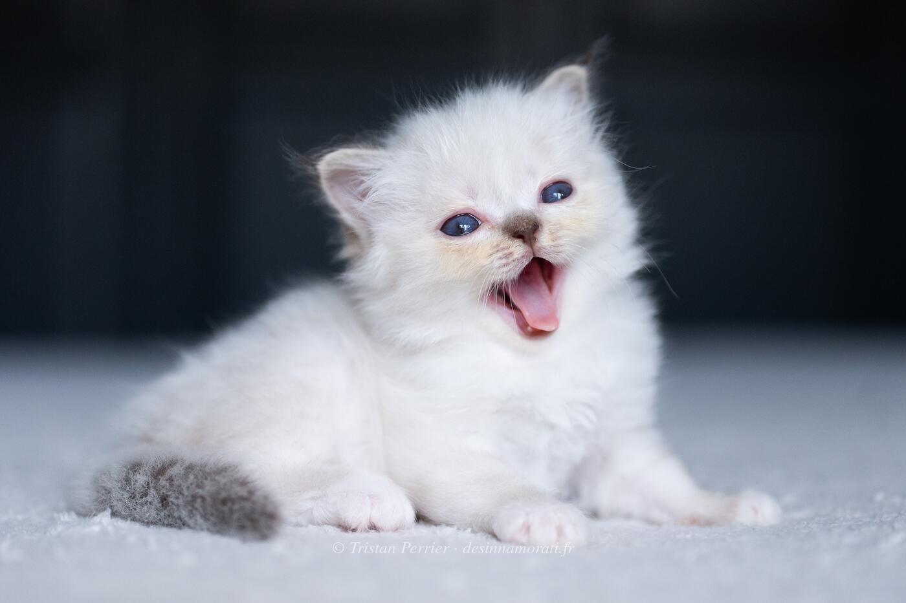

RobeFemelle · Chocolat tabby point
ParentsSanae des Innamorati × Bacckara's Bellamy
StatutAdoptée
Album3 photos, de juillet 2023 à décembre 2024
Frères et sœursUlysse des Innamorati, Uranie Aka Lizzie des Innamorati, Urion Aka Obé Aka Utah des Innamorati
Demi-frères et sœurspar sa mère : 2022 avec Oedipe, 2024 avec Backkara's Bellamy
par son père : 2023 avec Crowned Dream Kacey, 2024 avec Simone de Beauvoir, 2024 avec Sanae
par son père : 2023 avec Crowned Dream Kacey, 2024 avec Simone de Beauvoir, 2024 avec Sanae


Photos réduites et marquées. Elles appartiennent à la Chatterie des Innamorati et ne peuvent pas être reprises dans une annonce.